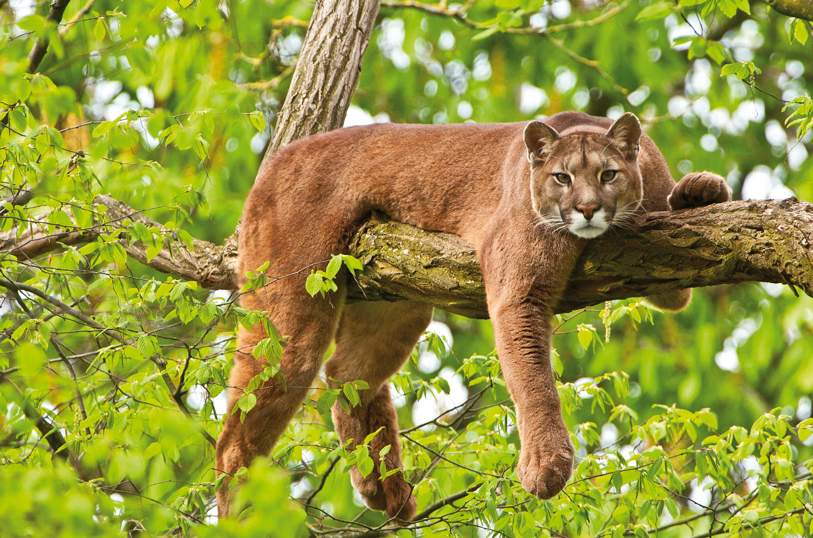
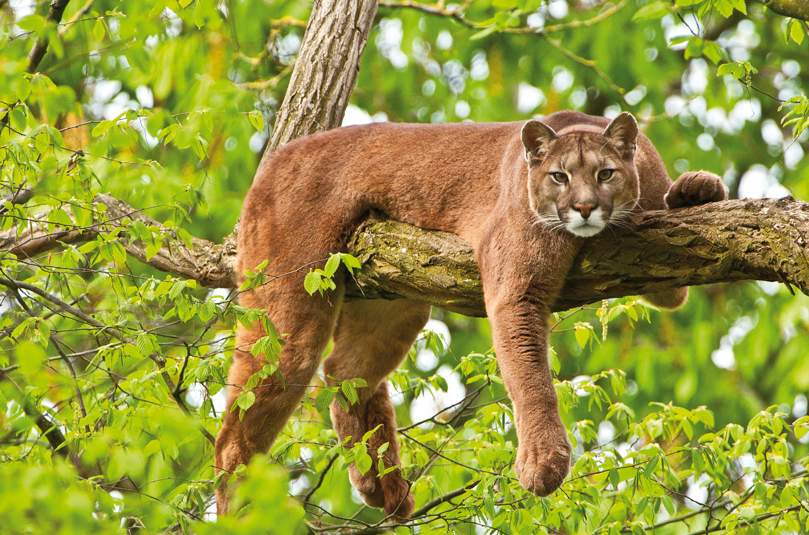
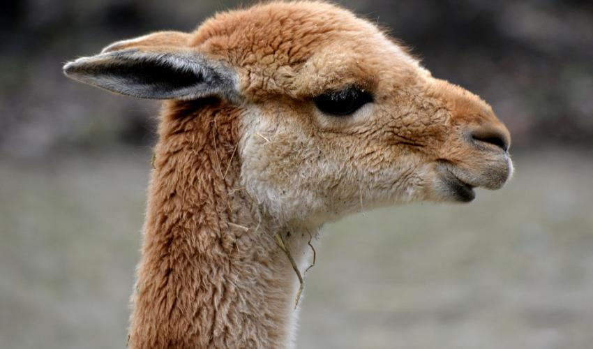
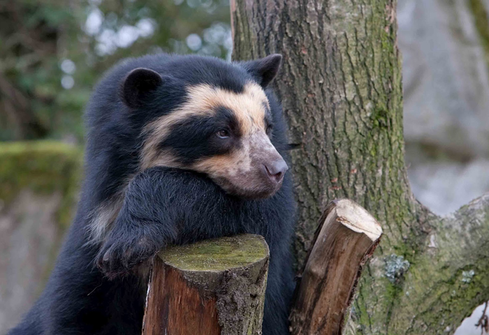
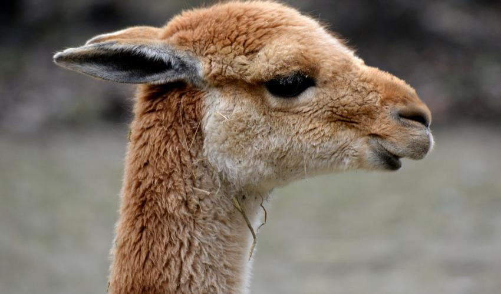
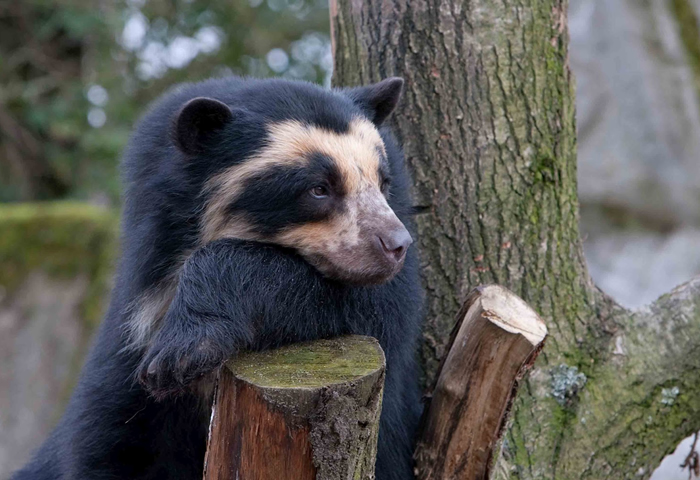

Las vizcachas eran en otras épocas abundantes en las sabanas del sur del Paraguay, de Bolivia y de Argentina, tanto en los desiertos como sobre la costa, o en la montaña de los Andes, puede vivir hasta los 5000 m de altitud, busca terrenos secos, pedregosos, habita en estos lugares porque hay menos depredadores siendo más fácil esconderse. Actualmente son sistemáticamente exterminadas porque constituyen una competencia importante con los bovinos y porque su orina ácida mata las hierbas. Las vizcacheras son sus nidos, son muchos túneles subterráneos de hasta 20 metros, la construyen en lugares altos. La vizcacha no tiene problemas para compartir, su vizcachera con otros animales, como zorros, lechuzas, ya que su cueva tiene muchas bocas, hasta 15.
Aunque varios aspectos relacionados con la reproducción de cóndores en cautiverio son bien conocidos (ver más arriba), la información sobre su reproducción en estado silvestre es muy escasa. Hasta el momento, fueron realizadas observaciones específicas sobre la reproducción en Chile (Pavez y Tala 1995), en Ecuador (INEFAN 1997) y en la Patagonia argentina (Lambertucci y Mastrantuoni 2008, Ambat y Sympson, datos no publicados). En su mayoría se trata de observaciones o registros puntuales en uno o unos pocos nidos, lo que denota la necesidad de intensificar esfuerzos de investigación en el área del comportamiento reproductivo. Los adultos que no están reproduciéndose pueden ser observados a lo largo de todo el año en dormideros comunales (Lambertucci et al. 2008). En cambio, al momento de reproducirse, la pareja se separa temporalmente del resto del grupo y proceden a la elección del nido, dando comienzo a cortejos y cópulas (Pavez y Tala 1995, Jácome y Lambertucci 2000). En Patagonia, esto sucede generalmente durante el invierno, aunque el proceso puede comenzar en el verano anterior (Lambertucci y Mastrantuoni 2008). La incubación ocurre habitualmente entre octubre y diciembre en el sur de su distribución geográfica (Pavez y Tala 1995, Lambertucci y Mastrantuoni 2008). Los nidos generalmente están ubicados en cuevas o repisas protegidas en paredones verticales, en muchos casos inaccesibles por medio terrestre para los predadores; no obstante, se han encontrado sitios más expuestos, como cuevas en el suelo (obs. pers., P. Manger com. pers., L. Sympson com. pers.).
El Cóndor Andino fue declarado en peligro de extinción por el Servicio de Pesca y Vida Silvestre de los Estados Unidos (USFWS 1986). Actualmente está considerado a nivel mundial cercano a la amenaza y listado en el Apéndice I de CITES (BirdLife International 2004, IUCN 2004). Está considerado amenazado en Perú, se encuentra en estado crítico en Ecuador y está declarado en peligro de extinción en Colombia y Venezuela (Lieberman et al. 1993, Cuesta 2000, Koenen et al. 2000). En este último país ha llegado casi a la extinción total y, por varios años, solo hubo registros esporádicos (ver Calchi y Viloria 1991). Se conoce muy poco acerca del estado poblacional del Cóndor Andino en Bolivia (Ríos-Uzeda y Wallace 2007) y es considerado vulnerable en Chile (Glade 1988). Si bien en Argentina no se la ha categorizado a nivel nacional, se ha propuesto que es una especie insuficientemente conocida (Chebez 1999). No existen datos poblacionales precisos para toda su distribución, aunque se ha estimado un número aproximado de 10 cóndores silvestres para Venezuela, menos de 100 para Colombia y 50 en el norte de Ecuador (Cuesta 2000, Koenen et al. 2000). Esto muestra la crítica situación de la especie en el norte de su distribución. Para Perú no existen registros poblacionales actuales y para Bolivia se ha estimado una población mínima de 78 individuos en Apolobamba, a partir de censos en carroñas (Ríos-Uzeda y Wallace 2007). En algunas zonas de Argentina y Chile esta especie se encontraría en un mejor estado poblacional (Donázar et al. 1999, Sarno et al. 2000, Donázar y Feijóo 2002, Kusch 2004, Lambertucci et al. 2008). No obstante, aún no han podido cuantificarse el número de individuos ni las tendencias poblacionales en toda su distribución en estos países. Además, se han reportado extinciones locales a lo largo de América del Sur que amenazan con interrumpir el flujo génico del Cóndor Andino (Cuesta 2000), que, además, poseería una muy baja variabilidad genética (Hendrickson et al. 2003).
Enlaces a otras páginas
 

 


